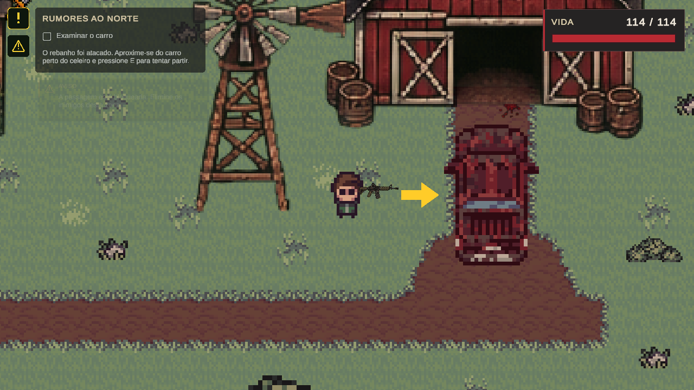

01
DOIS MAPAS.
UMA SAÍDA.
Da floresta à cidade, avance por zonas e cumpra objetivos para liberar as próximas passagens.
SURVIVAL SHOOTER 2D / FEITO EM UNITY
O norte é sua última chance.
O mundo mudou. Seu carro parou. Atravesse a floresta, sobreviva à cidade e encontre um jeito de partir antes que seja tarde.
BAIXAR PARA WINDOWS
PONTO DE PARTIDA / A FAZENDANÃO DÁ PARA FICAR.
Um fazendeiro escuta rumores sobre um vírus e uma região segura ao norte. Quando encontra seu rebanho atacado, fugir deixa de ser uma escolha.
Mas o carro não funciona. Para repará-lo, você precisa atravessar as zonas da floresta, encontrar um mapa no acampamento e chegar à cidade em busca de uma chave, combustível e uma bateria.
Elimine as ameaças para abrir caminho, recolha recursos e prepare suas melhorias. Só não espere que a viagem de volta seja igual à ida.
CONHEÇA A EXPEDIÇÃOUm projeto feito para aprender. Um mundo feito para sobreviver.Desenvolvido em Unity para a disciplina de Programação para Jogos, no curso de Ciência da Computação da UNIPAC.
2026Pixel art por fora.
Sobrevivência em cada decisão.
Da floresta à cidade, avance por zonas e cumpra objetivos para liberar as próximas passagens.
Combate em visão superior com pistola ou fuzil. Escolha sua arma antes de começar a run.
Use os recursos coletados para melhorar vida, dano e sorte na Safe Zone entre as expedições.
Enfrente ameaças mais fortes e chefes com ataques próprios no caminho de volta para o carro.
Conheça o que espera por você.
Selecione uma imagem para ampliar.
04 / ANTES DE PARTIR
Baixe o arquivo ZIP, extraia a pasta inteira e abra UltimaRota.exe. Você não precisa instalar a Unity para jogar.
| Sistema | Windows 10 ou 11 · 64 bits |
|---|---|
| Processador | x64 com suporte a SSE2 |
| Memória | 4 GB de RAM sugeridos |
| Gráficos | GPU compatível com DirectX 11 |
| Armazenamento | 1 GB livre sugerido |
| Controles | Teclado e mouse |
Referência inicial de compatibilidade. O hardware mínimo de desempenho ainda não foi medido em diferentes computadores. Internet necessária apenas para o download.
A SUA ROTA COMEÇA AQUI.
Prepare a arma. Encontre as peças. Volte para o carro.
O norte ainda pode ser uma saída.